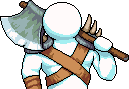
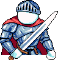
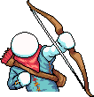
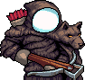
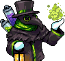

IdleOn is the #1 Idle game on Steam -- now available on
Android with NO ADS! The RPG where your
characters
keep leveling up when you're gone! Create unique class
combos, and spend loot on
powerful upgrades, all while
cooking, mining, fishing, breeding, farming, and slaying
bosses!
Classes
Warrior Family
Warrior (Base)
Specializes in Mining. Warriors gain Damage from Strength and Accuracy from Wisdom. Very tanky but slow range.

Barbarian (Subclass)
Specializes in Fishing. High damage output, risky No Pain No Gain, plus Mocking Shout lure skill.

Squire (Subclass)
Construction specialist. High defense and AoE, uses Balanced Spirit to boost Accuracy/Defence.
Blood Berserker (Elite)
Cooking specialist. Extreme damage: triple‑strike Ferocity Strike + increased attack rate.
Divine Knight (Elite)
Gaming specialist. Boosts entire party’s effectiveness. AoE‑focused like Squire’s evolution.
Death Bringer (Master)
Farming specialist. Focused on dark magic and soul-based attacks. Excels in burst damage and sacrificing health for power.
Archer Family
Archer (Base)
Smithing specialist. Ranged, adaptable; boosts HP/MP, double‑strikes and better loot.

Bowman (Subclass)
Catching specialist. Triple‑strike via Magic Shortbow and Homing Arrows; good multi-target range.

Hunter (Subclass)
Trapping specialist. Single‑target focus; triple‑strike and mob‑respawn via Uwu Rawrrr.
Siege Breaker (Elite)
Sailing specialist. Enhances multi‑attacks + can spawn Plunderous mobs.
Beast Master (Elite)
Breeding specialist. Summons creatures & quad‑strike for hunting efficiency.

Wind Walker (Master)
Sneaking specialist. Focuses on fast single-target attacks, high Agility scaling and wind-themed skills for quick farming.
Mage Family
Mage (Base)
Choppin specialist. High wisdom damage, fragile defence, strong skills with MP.
Shaman (Subclass)
Alchemy specialist. Extended invincibility, damage & healing skills.
Wizard (Subclass)
Pure damage focus. AoE skills + attack rate boost via Speedy Book.

Bubonic Conjuror (Elite)
Laboratory specialist. AoE poison DoTs and mob resurrection (Raise Dead).
Elemental Sorcerer (Elite)
Divinity specialist. Catastrophic spells + Chaotic Force for extra standards.

Arcane Cultist (Master)
Summoning specialist. Enhances the Bubonic Conjuror with powerful Arcane attacks and transformations like Arcanist Form. Boosts talents such as Sizzling Skull and unlocks the Tesseract upgrade path.
Journeyman Secret Family
Journeyman (Beginner)
Looting specialist. Obtained via secret questline instead of base class.
Maestro (Subclass)
Player‑skills specialist. Improves printer sample size bonuses.
Voidwalker (Elite)
Speedrunning specialist. Boosts fighting AFK gains.